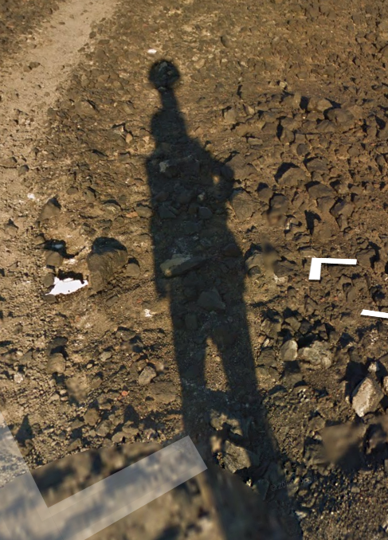

Geografia:
Paisagem:
Não há nenhuma vegetação que cresca no clima da Antártida, o terreno é rochoso e é possível ver terra, gelo, neve e pedras no solo. É possível encontrar algumas montanhas e perto da costa pode-se ver o mar congelado.
- Estação McMurdo: de todos os lugares possíveis de se obter na Antártida, esse é o mais comum. Mais perto da costa é possível ver as poucas casas e instalações do lugar, enquanto mais ao norte encontramos o chão coberto de neve e os marcadores de trilha.
- Deception Island: aqui o mar não é congelado, e é possível encontrar pinguins e pessoas na ilha.
- Half-Moon Island: assim como na ilha anterior, aqui é possível encontrar pinguins e pessoas. Entretanto, a qualidade da imagem é um pouco pior.


Arquitetura:
Meta:
Carro do Google:
Não há carro do Google na Antártida, mas sim cobertura Trekker:
Geração da câmera: Gen 3
Streetview:
Há basicamente três áreas na Antártida que possuem cobertura: a estação McMurdo e arredores, a Half Moon Island e a Deception Island